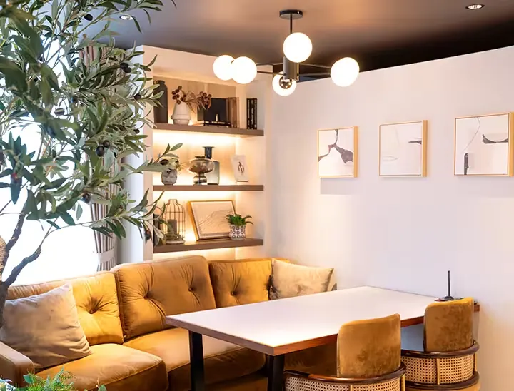
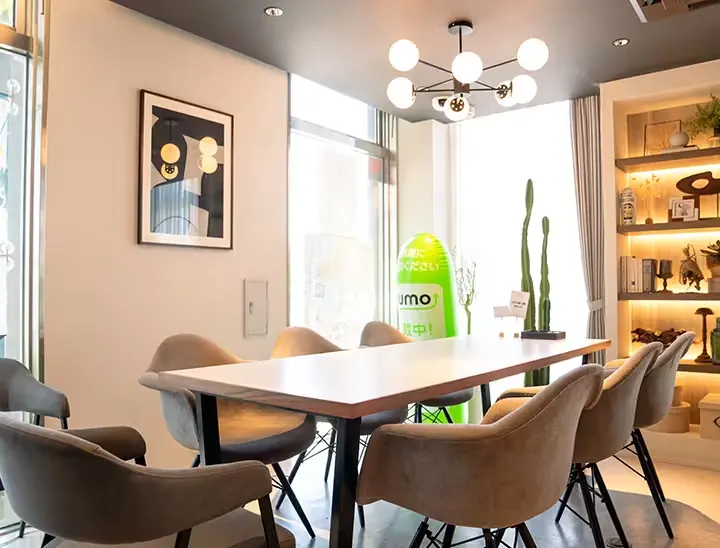

担当は、ずっと代表ひとり
査定から引渡しまで、代表の〇〇が直接担当します。途中で担当者が変わることはありません。
安城・刈谷・知立・高浜・碧南の不動産査定なら、〇〇不動産。一括査定のように何社からも電話が来ることはありません。

代表取締役 〇〇 〇〇
宅地建物取引士・FP。「良いことも悪いことも、正直にお話しします。」
目的と住所を選ぶだけ。国のデータで価格の目安がすぐわかります
状況によって、いちばん良い売り方は変わります。あてはまるものを選ぶと、進め方と注意点がわかります。

「良いことも、悪いことも、正直にお話しします。売らないほうがいい時は、そうお伝えします。」
家を売るのは、人生で何度もないことです。だから私は、すべてのご相談に自分で向き合うと決めています。相続した実家のこと、住宅ローンのこと、ご家族のこと。まずは話を聞かせてください。本人確認の上で確定
代表取締役 〇〇 〇〇
一括査定は「会社を比べる場所」。〇〇不動産は「最後まで同じ人が付き添う場所」です。
査定から引渡しまで、代表の〇〇が直接担当します。途中で担当者が変わることはありません。
 PROMISE 02
PROMISE 02
ご連絡は、ご希望の方法だけ。査定だけ・相場を知りたいだけでも、もちろん大丈夫です。
 PROMISE 03
PROMISE 03
囲い込み（＝他社に物件を紹介させず、自社だけで売ろうとすること）はしません。進み具合は定期報告書でお知らせします。
| 比べるところ | 一般的な一括査定サイト | 〇〇不動産 |
|---|---|---|
| 連絡してくる会社 | 申し込んだ複数の会社から連絡が来ることがあります | 当社1社だけ。連絡方法もお選びいただけます |
| 担当する人 | 会社ごとに担当者が決まります | 代表の〇〇が最初から最後まで担当します |
| 価格の根拠 | 会社ごとに査定書で説明されます | Web査定でも、地価・取引・計算の内訳をすべて公開しています |
| 訳アリ物件・相続 | 対応は会社によって異なります | 買取業者のネットワークと士業6職種の連携で対応します |
| 売り方 | 主に仲介（売り出し） | 仲介・買取・買取保証付き仲介・リースバックから選べます |
※一括査定サイトの仕組みは一般的な例です。サービスによって異なります。
4つの査定プランは「スピード」と「価格」のバランスで選べます。どれを選んでも査定は無料で、あとから変更もできます。
 とにかく早く
とにかく早く
〇〇不動産や提携業者が直接買い取ります。最短即日で現金化できる場合があります（物件・条件によります）。
 とにかく高く
とにかく高く
時間をかけて広く買主を探し、できるだけ高く売ることを目指す仲介の売り方です。
 バランス重視
バランス重視
まず仲介で高値を目指し、期限までに売れなければ買い取る方法です。
 まだ売るか未定
まだ売るか未定
相場を知りたいだけでもOK。売るかどうかは、あとで決めて大丈夫です。
| 売り方 | 価格の目安 | 売れるまで | 仲介手数料 | こんな方に |
|---|---|---|---|---|
| 仲介 | 相場で売りやすい | 数か月〜仮 | かかる | 価格を重視したい |
| 買取 | 相場より下がりやすい | 最短即日（条件によります） | かからない | 急ぐ・傷みがある・近所に知られたくない |
| 買取保証付き仲介 | 仲介と買取の間 | 期限を決めて確実 | 仲介成立時はかかる | 高く、かつ確実に売りたい |
| リースバック | 相場より下がりやすい | 早い | 条件による要確認 | 売った後も住み続けたい |
※価格・期間は物件や市場の状況で変わります。具体的な条件は査定時にご説明します。
〇〇不動産は、三河エリアで訳アリ物件・相続不動産の売却に取り組む不動産会社です。傷んだ家を買い取る業者とのネットワークがあります。
名前不要のWeb査定で概算を確認。フォーム・電話・LINEでご相談ください。
訪問査定・机上査定・AI査定を組み合わせ、代表が根拠と一緒にお伝えします。
4つの査定プランから、ご希望に合う売り方を一緒に決めます。
囲い込みはせず、進み具合は定期報告書でお知らせします。
相続や税金の手続きも、提携の専門家と一緒にサポートします。

安城市・刈谷市・知立市・高浜市・碧南市は、地元の相場と実際の査定事例をもとにご提案します。西三河・愛知県全域もご相談いただけます対応範囲要確認。
※位置関係のイメージ図です（実際の市境とは異なります）。
遠方にお住まいの方へ：三河に実家や土地をお持ちなら、電話・LINE・オンライン面談で、来店せずに売却まで進められます。愛知県外の物件は、信頼できる提携不動産会社をご紹介します。Web査定は全国で使えます。
愛知県の市区町村別の相場／全国の都道府県別の相場（例：東京都）
高浜市内のビル1階。駐車場・キッズスペース・半個室の相談スペースがあるので、お子さま連れでも、周りを気にせずご相談いただけます。





売却・相続・空き家・税金のことを、代表の〇〇がわかりやすく解説します。
しつこい営業はしません。ご連絡はご希望の方法（電話・メール・LINE）だけです。査定後に売らなくても、費用は一切かかりません。
ご相談いただけます。再建築不可（＝今の建物を壊すと新しく建てられない土地）や、雨漏り・ゴミ屋敷の家も、買取業者とのネットワークで売却方法を探します。
いいえ。Web査定は国の地価公示・地価調査と建築費の統計から計算した価格の目安です。正確な金額は、代表が物件を確認してお伝えします。
できます。電話・メール・LINE・オンライン面談で、現地に来なくても進められます。LINEは24時間受け付けています。
そのままご相談ください。2024年4月から相続登記（＝亡くなった方から名義を変える手続き）は義務になっています。司法書士と連携して手続きからお手伝いします。
売るかどうかは、そのあとで決めて大丈夫です。
査定・相談をした方に、書籍を無料プレゼント書籍名要確認